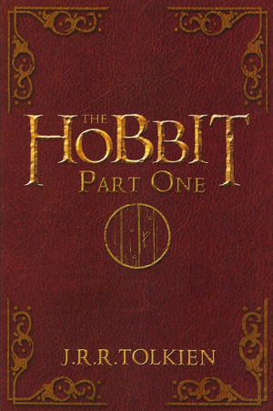
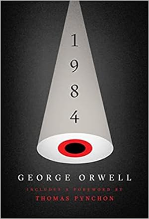

O Pequeno Príncipe
Publicado por:Ayza Data:11/02/2025
O Pequeno PríncipeO pequeno príncipe.
Um clássico, com certeza é um livro que todo mundo deveria ler na vida.
Contado em fábula pode ser lido por todos, já li este livro várias vezes e todas as vezes que leio vejo com outros olhos.
"É preciso que eu suporte duas ou três larvas se quiser conhecer as borboletas"
esta passagem fala sobre como devemos encarar situações e momentos ruins com resignação e fé, pois assim momentos melhores virão

Veja mais sobre esse livro aqui.
The Hobbit-Uma Jornada inesquecível
Publicado por:Ayza Data:10/02/2025
The HobbitEssa é uma história de fantasia muito incrível, de verdade.É impressionante como você a medida que lê a história vai se inserindo no universo dessa ficção fantástica, passando a ter o conhecimento da personalidade de cada um, e dos problemas que estão sendo enfrentados no momento.E o que dizer da narração não é mesmo... Impecável.

Veja mais sobre esse livro aqui.
1984 - George Orwell e os avisos sobre o Futuro
Publicado por:Ayza Data:12/02/2025
O livro1984 Nos alerta sobre um futuro distópico de vigilância extrema.

Veja mais sobre esse livro aqui.
três motivos para ler esse clássico:
- O enredo aborda controlhe social e política
- O livro é instigante e cheio de reviravoltas
- Frases marcantes como"O Grande Irmão está de olho em você"
Ordemde leitura recomendada dos livros de Orwell pelos usúarios:
- A Revolução dos Bichos
- 1984
- Cartas da Guerra
Comparação de Clássicos da Literatura
Publicado por:Ayza Data:12/02/2025
Veja uma comparação entre alguns clássicos e seus temas principais:
| Livro |
Autor |
Tema |
| 1984 |
George Orwell |
Controlhe Social, distopia |
| The Hobbit |
J.R.R. Tolkien |
fantasia,aventura |
| O Pequeno Príncipe |
Antoine de Saint-Exupéry |
valores fundamentais e universais,infância |
| Harry Potter e a Pedra Filosofal |
J.K. Rowling |
Magia,amizade |
| The Great Gatsby |
F. Scott Fitzgerald |
Sonho americano, riqueza |
Formulário de Contato
Data: 14/02/2025